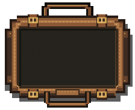
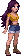

PERSONAGEM MODULAR
Anatomia refinada. Cabelo com física.
Respiração, peso, olhar, piscar, inércia e cabelo são sistemas separados, cada um no seu próprio ritmo — é a separação que faz o personagem parecer gente parada em vez de boneco balançando. Passe o mouse pela cena: os olhos acompanham.
{kind=link}
PERSONAGEM · H · ARRASTE AQUI
Saúde
CARNE É TRÂNSITO
VONTADE É PERMANÊNCIA
Sem sangramento ativo
VISÃO D 100% · E 100%
Sem ferimentos nesta região.
ÓRGÃOS VITAIS
Ferramentas do mestre
O relógio continua para os demais personagens. Novos danos ainda podem ser registrados.
LESIONAR REGIÃO SELECIONADA
LESIONAR ÓRGÃO SELECIONADO
Selecione o órgão na aba Órgãos. Trauma profundo rompe a proteção; um órgão muito lesionado pode se desprender.
Regras do mestre
Prazos em segundos do relógio de saúde. Valores de jogo; alterações valem para novos episódios.
Contagens em andamento são preservadas.
EQUIPAMENTO DE CAMPO · I
Bolsa de suprimentos

Arraste para mover · R gira · Enter pega/solta · Esc cancela
Selecione um item
Seus suprimentos, sempre à mão.
Clique ou use Tab para inspecionar.
Repor suprimentos · demonstração
Cada tratamento na aba de saúde gasta um item daqui. São 60 espaços — a tala ocupa 3, a bandagem 2 e o antibiótico 2.
INSPEÇÃO DO RIG
Uma peça por vez.
Selecione um osso para ajustar seu ângulo ou ocultar uma peça. Mãos, antebraços, pescoço e abdômen têm pivôs próprios. As duas camadas de cabelo são deformadas pela física linha a linha, não por ossos.

Comparar o cabelo ↗Ver todas as peças e pivôs ↗ · Cabelo antes e depois ↗ · Física do cabelo ↗ · Pele ↗